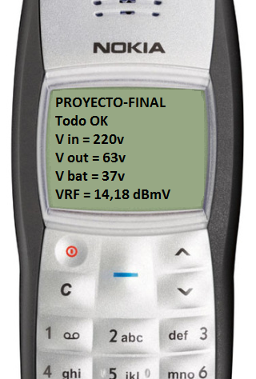

Proyecto Final
Monitorización de redes HFC
Lionel Fernadez || Leonardo Gago || Franco Trillo
Temas
Introducción a las redes HFC
Temas
Objetivo del Proyecto
-
Conocer el estado de funcionamiento de las fuentes permite:
- Detección Proactiva de cortes de energía.
- Acción inmediata ante salidas de servicio de la fuente y consecuente apagado de la red.
Solución ya implenetada
- En redes con servicio doble vía (Cable Modem) las fuentes disponen de Transponders para su monitorización.
Enfoque del Proyecto
-
Problemática:
- Zonas sin servicio de datos.
- Fuentes de tecnología anterior.
Solución Propuesta:
ESTACION DE MONITORIZACION DE REDES H.F.C.
Sensado de los parámetros de la fuente y/o red HFC para determinar su estado:
- Tensión de alimentación de la red.
- Tensión de salida de la fuente.
- Tensión del pack de baterías (En fuentes UPS / Stand-By).
- Nivel de Señal de RF en la red.
Envió de Información por SMS:
- Keep-Alive Periódico con parámetros.
-
Detección de problemas:
- Salida de servicio.
- Cortes de señal de RF.
- Cortes de energía del proveedor eléctrico.
- Estimación de autonomía en modo Stand-By.
Temas
Diseño
Diseño - Circuito
Diseño - Tablero
Diseño - Montaje
Diseño - Software PC

Temas
Funcionamiento del equipo
En situacion normal:
- Envío periódico de SMS informando la ultima medición.
- Enviando SMS con la frase: GET STATUS
- Respuesta con valores de la ultima medición.
Funcionamiento del equipo

Funcionamiento del equipo
En situación de fallas:
- Tensiones fuera de umbrales.
- Señal de RF por debajo del umbral.
- Envío periódico de SMS informando la falla presente y los valores de la ultima medición.
- Ante cortes de energía de línea, estimará el tiempo de autonomía restante, informándolo.
Funcionamiento del equipo
Temas
Mejoras futuras
CORTO PLAZO:
-
Mejoras en el Código del micro-controlador.
- Unificación de terminal de Debug y configuración.
- Mejorar la información de los SMS.
-
Rediseño del circuito impreso:
- Mas compacto para reducir el tamaño de la placa.
Mejoras futuras
LARGO PLAZO:
-
Mejoras en las comunicaciones:
- Utilizar conexión 4G + Protocolo TCP + SMS.
-
Element Manager:
- Central de alarmas (N dispositivos).
- Configuración remota de parámetros.
¿Preguntas?
¡GRACIAS!
Leonardo Gago
ANEXO
Áreas clave del Negocio
-
Detección proactiva:
- Mejorar la disponibilidad del servicio.
-
Mejorar tiempos de respuesta:
- Adelantarse al llamado del cliente.
Áreas clave del Negocio
Áreas clave del Negocio
Venta de 90 Equipos para recuperar inversión.
Análisis Autonomía
- Análisis de la pendiente sobre la caída de tensión en las baterías.
- Proyección lineal para determinar el tiempo restante hasta alcanzar el punto de corte.
Análisis Autonomía
- Algoritmo de calculo:
- Proyección lineal para determinar el tiempo restante hasta alcanzar el punto de corte.
\[\begin{aligned} t \cong \frac{V_{c} - V_{u}}{(V_{\alpha} - V_{u}) / \alpha} \end{aligned} \]
Análisis Autonomía
\[\begin{aligned} t \cong \frac{V_{c} - V_{u}}{(V_{\alpha} - V_{u}) / \alpha} \end{aligned} \]
- Donde:
- \(\alpha\): Resultado de la evaluación del contador.
- \(V_{\alpha}\): Tensión de baterías para el (\(\alpha\)) calculado.
- \(V_{c}\): Tensión de corte de la fuente, en general 31,6V.
- \(V_{u}\): Último valor de tensión de terna medido.
¡GRACIAS!
Leonardo Gago